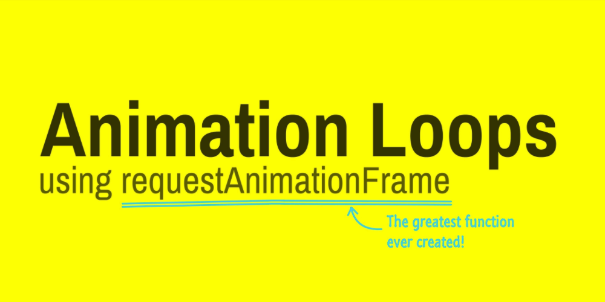

requestAnimationFrame

setTimeout
语法：setTimeout(function,delay)
定义：setTimeout()方法用于在delay毫秒数之后调用函数或计算表达式。
setTimeout()指定的时间间隔表示何时将定时器的代码添加到任务队列中，而不是何时执行代码。
setInterval
语法：setInterval(function,delay)
定义：setInterval()方法可按照指定的delay周期（以毫秒计）来调用函数或计算表达式。
使用setInerval()创建的定时器确保定时器代码规则地插入任务队列中。不过仅当没有该定时器的任何其他代码实例时，才将定时器代码添加到队列中。这确保了定时器代码加入到队列中的最小时间间隔为指定间隔。这种重复定时器会存在如下问题：
- 在某些间隔会被跳过
- 多个定时器的代码执行之间的间隔可能会被预期的小
可以通过如下链式setTimeout()调用模式来避免类似问题：
|
|
不过setInterval()会不停地调用函数，直到窗口关闭或调用clearInterval()。当然如果链式setTimeout()调用模式没有终止逻辑，也会一直运行下去。因此再不需要重复定时器时，确保对定时器进行清除，避免占用系统资源。
requestAnimationFrame
在JavaScript中创建动画的典型方式就是使用setInterval()方法来控制所有动画（或链式setTimeout()调用模式）。编写这种动画循环的关键是要知道延迟时间多长适合。一方面，循环间隔必须足够短，这样才能让不同的动画效果显得更平滑流畅；另一方面，循环间隔还要足够长，这样才能确保浏览器有能力渲染产生的变化。通常电脑显示器的刷新频率是60Hz，大概相当于每秒重绘60次，平均每次约等于17ms(1000ms/60)，以这个循环间隔重绘动画可到达最平滑效果。
虽然与使用多组setTimeout()的循环方式相比，使用setInterval()的动画循环效率更高，但后者也不是没有问题的。无论是setInterval()还是setTimeout()都不十分精确。传递给它们的第二个参数，实际上只是指定了把动画代码添加到浏览器UI线程队列中以等待执行的时间点。如果队列前面已经加入了其他的任务，那动画代码就要等待前面的任务完成后再执行。另外，要保证动画平滑的关键是要知道下一帧的绘制时间点，而开发人员没有办法确保浏览器按时绘制下一帧。加上浏览器使用的计时器并非精确到毫秒级别。
CSS的transition和animation效果优于JavaScript实现的动画效果，原因在于CSS知道动画什么时候开始，会计算出正确的循环间隔，在适合的时候刷新UI。基于该问题，浏览器为了JavaScript动画添加了一个新API，即requestAnimationFrame()。
语法：requestAnimationFrame(callback);
定义：告诉浏览器希望执行动画，并请求浏览器调用指定的函数在下一次重绘之前更新动画。
该方法使用一个回调函数callback作为参数，这个回调函数callback会在浏览器重绘之前调用。回调频率通常是每秒60次。回调函数callback会被传入一个参数DOMHighResTimeStamp，指示从触发requestAnimationFrame回调到现在的时间。requestAnimationFrame(callback)会返回一个long整数，请求ID，也是回调列表中唯一的标识，一个非零值，可以传此值到 ancelAnimationFrame(requestID)以取消回调函数。
requestAnimationFrame基本思想是利用显示器的刷新机制，与刷新频率保持同步，并利用这个刷新频率进行页面重绘更新。不过需要注意：因为JavaScript单线程工作机制，如果主线程一直处于繁忙状态，那么requestAnimationFrame的动画效果也会受影响的。
使用
使用requestAnimationFrame的时候，只需反复调用它即可：
|
|
优势
与setTimeout和setInterval相比，requestAnimationFrame有如下优势：
- 在后台标签页、不活动标签页、最小化窗口中，requestAnimationFrame会自动暂停，节省系统资源为其他任务。
- 在一个帧中对DOM的所有操作，只进行一次Layout和Paint更新。
- 利用显示器的刷新机制，知道动画何时开始，能确定动画最佳循环间隔时间及代码何时执行，并在适合的时候刷新UI。
不活动标签页中，setInterval与requestAnimationFrame的活动状态：
| setInterval | requestAnimationFrame | |
|---|---|---|
| IE9- | no | no supported |
| IE10+ | no | paused |
| Chrome9- | no | no supported |
| Chrome10 | no | paused |
| Chrome10+ | >=1000ms | paused |
| Firefox3- | no | no supported |
| Firefox4 | no | 1s |
| Firefox5+ | >=1000ms | 2ns (n = number of frames since inactivity) |
| Safari5- | no | no supported |
| Safari6 | no | paused |
| Safari7+ | >=1000ms | paused |
| Opera12- | no | no supported |
| Opera15+ | >=1000ms | paused |
注：
- -: <=
- +: >=
- no: 没影响
- no supported: 不支持
- paused: 暂停
- >=1000ms: 时间间隔大于等于1000ms，即如果时间间隔小于1000ms会被调整为1000ms，如果时间间隔大于等于1000ms会用指定时间间隔
- 1s | 2ns: 时间间隔（在Firefox不活动标签页中，requestAnimationFrame每帧消耗时间以2的次方依次递增：1s、2s、4s、8s…..）
兼容性：
polyfill：
|
|